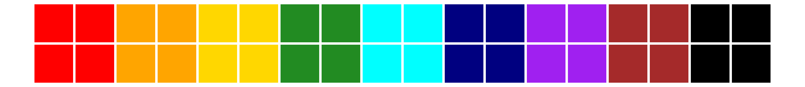

| Part 1. Core Values Journey (~50 minutes) | Part 2. Core Values Circle (For Teams) |
|---|---|
| Introduction | Regrouping |
| Initial Picks - 20 Chosen | Throw Everything on the Board |
| Grouping | The Method: Revise, Combine, Delete |
| The Journey | Grouping |
| 1st Toll | Round 1 |
| 2nd Toll | Round 2 |
| 3rd Toll | Round 3 |
| 4th Toll | Round 4 |
| 5th Toll | Round 5 |
| Final Toll |
~2 minutes
Throughout this activity, you’ll see text
that looks like this
If you’re doing this activity on your own, you’ll just need to read these normally. If you’re leading a group through this activity, these are what you’ll ready aloud to the group.
This activity is designed to help you reflect on and decide the values you wish, or you wish your team, to hold most dear, above all else. It is adapted from an activity I was taught several years ago while I was a Residential Assistant at the University of Oregon. It may feel goofy or challenge you at different times, but as with most work of this kind, the more you put in, the higher quality results you will get at the end. Everyone will be doing this first part individually. In the second part we’ll bring our pieces together.
~10 minutes
Send the following link: list of 500
Core Values
https://www.threadsculture.com/core-values-examples
Please look through this list of almost 500 example core values. Consider which values you’d like to see most and which you think will help us all be successful this year, whatever that means to you. You have 10 minutes to choose 20 from this list and write them somewhere easy to access. If you do not see a value you wish to include, please write it in as part of your initial 20.
Do not read ahead too quickly or tell your group how many values you’ll work down to yet. Each step participants will need to “Pay” to advance with some of their values. Only tell them how many they need to pay at each step as you read the script. Individuals, please scroll slowly.
~2 minutes
Look over your initial picks. If you see common themes between the values you’ve chosen, please group them together by writing them again in a list or circling them, whichever is easier. You may have 3 here, 8 there, and only 1 in another group. You have 2 minutes to group common values together.
We are all going to go on a journey with our values. At the end of our separate journeys, we will arrive at a mountain inn where we’ll finalize our team’s core values. At each step of your journey there will be a cost. Each time, please take a moment for honest consideration before you decide how you will proceed.
~5 minutes
For the first leg of your journey, you will need to secure plane tickets. They’re practically charging an arm and a leg anymore. Please pay for air travel with 5 of the values you’ve selected. You have 3-5 minutes to decide which ones you’ll cross off from your list.
~5 minutes
For the second leg of your journey, you will need to take a bus from the city out into the country. It’s a long ride, but not one that many people take, so demand has stayed low. Please pay for bus travel with 2 of the values you’ve selected. You have 3-5 minutes to decide which ones you’ll cross off from your list.
~5 minutes
You’ve arrived at a large river. For the third leg of your journey, you will need to take a ferry across. There is only one ferry on this river and it travels this way only once every week. The ferry driver asks for 7 of your values to cross, but you’re a good negotiator and talk them down. Please pay for the river crossing with 4 of the values you’ve selected. You have 3-5 minutes to decide which ones you’ll cross off from your list.
~5 minutes
Now across the river, an hour’s walk has brought you to the base of the mountain. An outpost houses guides for those wanting to avoid the dangers of the climb. Please pay for your guide with 2 of the values you’ve selected. You have 3-5 minutes to decide which ones you’ll cross off from your list.
~5 minutes
Having been guided up the mountain along the safest route, you arrive at a bridge connecting this side with the peak where the inn resides. The high winds in the winter means the bridge requires annual maintenance. Please pay to cross the bridge with 2 of the values you’ve selected. You have 3-5 minutes to decide which ones you’ll cross off from your list.
~5 minutes
You have finally arrived at the mountain inn. It’s brisk despite the sun and the fire in the lobby is a welcome sight. The innkeeper sees you have given up a lot on your journey to get here and has lowered the cost of staying. Please pay to stay at the inn with 1 of the values you’ve selected. You have 3-5 minutes to decide which ones you’ll cross off from your list.
~5 minutes
You get settled in and return to the lobby. Watching the sun lower over the mountains in the distance, you reflect on your journey and what it took to get here. Please take 2 minutes to look at your list of values and reflect on the ones you gave up along the way and which ones you kept.
Just as you start thinking about second dinner, you look over and see a few of your friends walk through the door, undoubtedly having gone along a similar path and having given up similar things to make it here. You all agree to do the next work over food once they’ve unpacked.
The number of values in the following example was created for a team of 9 members who will each bring 4 core value candidates to the group discussion. Your team may have a different number of members, so please adjust the target number associated with each round to what will be appropriate for your situation. I’d recommend the first rounds cut the number down quickly, and then go slowly and spend a lot of time considering and discussing when you’re in the final 10.
We’ve each gone on our own difficult journeys, but now we must work through the really tough decisions. First, everyone please read out their final 4 core values from Part 1.
To reduce the size of this list we’ll use the following tools:
- Revise when we like the idea behind the value, but it could be strengthened by changing it to a similar, but more accurate word;
- Combine when multiple ideas seem to be getting at the same concept; and
- Delete when we make the difficult decision to eliminate a value from the list.
I’d recommend starting each round by Combining as many as possible to reduce the time and emotional energy spent on the difficult Delete decisions.
Just like before, we’re going to begin by grouping similar concepts to help the full list feel more organized. We have 10 minutes to get our 36 values into groups.

Congratulations! Determining your core values or your team’s core values is a big undertaking if done right. With your core values in hand, you can use them as a tool whenever you make a decision or as a way to check in with yourself. I’m really into low-barrier-to-entry type beginnings, so beginning with a very short reflection once a day is a good first step.
Going off of a general feeling is enough for some people. For others, it’s vague enough that after a couple weeks they’ve forgotten they’ve done the activity altogether. For anyone who wants to take this a little further, the next step is to determine your core principles, which are how your core values translate into action. That will be the subject of a future activity guide.